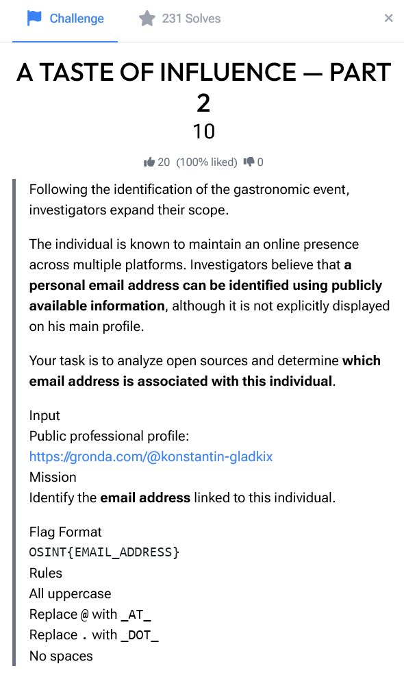
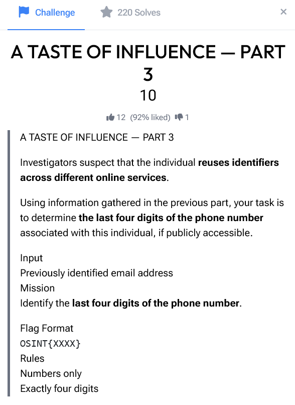
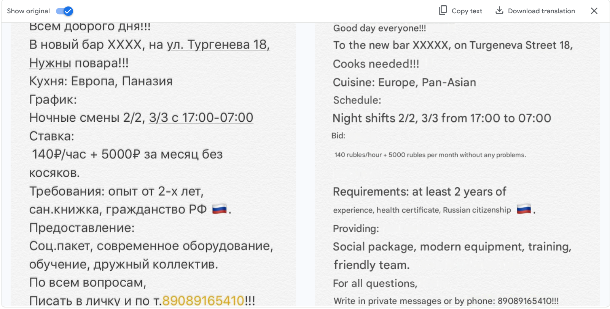
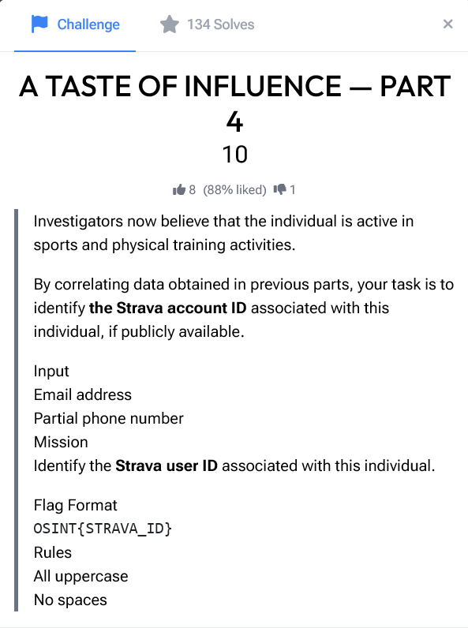
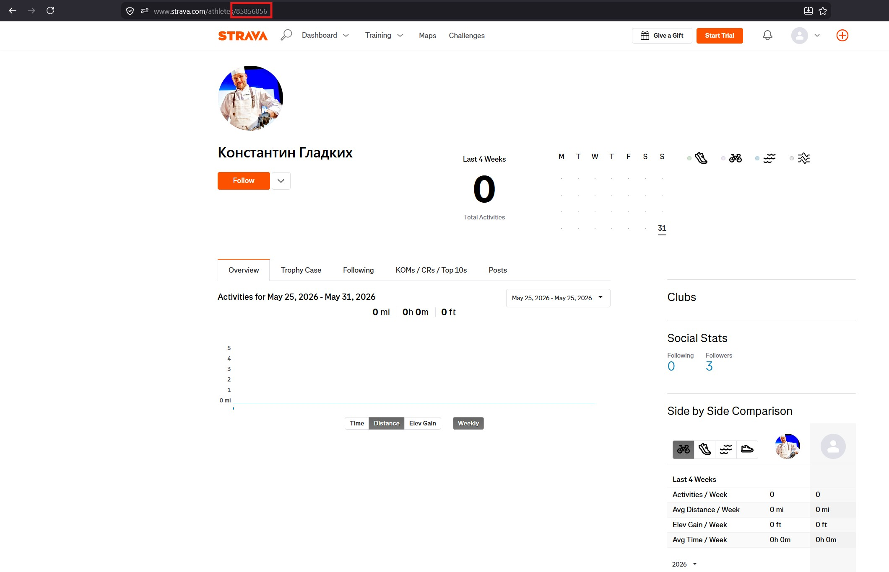

A Taste of Influence — Parts 2, 3 & 4
CTF · ctf.osint.industries

Background
Parts 2 and 3 continue the investigation from Part 1, where Konstantin Gladkikh was identified as a culinary professional who attended the GA5TREET gastronomic festival. Both challenges were solved using the same pivot point: their Instagram account, discovered by searching their full name and profession after establishing their identity in Part 1.
Part 2 — Finding the Email Address
Challenge Overview
Following the identification of the gastronomic event, investigators expand their scope. The challenge states that a personal email address can be identified using publicly available information, although it is not explicitly displayed on their main Gronda profile. The task is to find the email address associated with Konstantin Gladkikh.
Pivoting to Instagram
A direct name search on Google revealed their Instagram and Facebook profiles and surfaced the account @chefkonstantingladkih.
Extracting the Contact Information
Instagram business and creator accounts expose a Contact button that can surface an email address and/or phone number set by the account holder. Tapping Contact on the @chefkonstantingladkikh profile revealed:
- Email: k.gladkih@mail.ru
- Phone: +7 908 916-54-10
The email was publicly listed by the account holder themselves, making this a straightforward open-source extraction once the correct Instagram profile was identified.
Flag
OSINT{K_DOT_GLADKIH_AT_MAIL_DOT_RU}Part 3 — Finding the Phone Number

Challenge Overview
Part 3 builds directly on the email identified in Part 2. Investigators suspect the individual reuses identifiers across different online services. The mission is to determine the last four digits of the phone number associated with this individual.
No Additional Pivot Required
Because the Instagram Contact panel in Part 2 exposed not just the email but also a phone number in the same view, the answer to Part 3 was already in hand. The number listed was +7 908 916-54-10, a Russian mobile number. The last four digits are 5410.
The challenge's hint about reusing identifiers across services suggests the intended path may have been to use the email from Part 2 to look up the phone number on a separate platform (such as a Russian social network like VK). In this case, however, the phone number was directly exposed on the same Instagram profile, making the pivot unnecessary. Scrolling through their posts also reveals a post confirming the phone number.

Flag
OSINT{5410}Part 4 — Finding the Strava Account

Challenge Overview
Investigators now believe the individual is active in sports and physical training. Using the email address and partial phone number gathered in Parts 2 and 3, the task is to identify the Strava user ID associated with Konstantin Gladkikh.
Searching Strava by Name
With a confirmed full name and recognizable profile photo from Instagram, the approach was straightforward: create a Strava account and search for Константин Гладких (Konstantin Gladkikh) directly. Strava's athlete search surfaces public profiles by name, and a matching result appeared with a profile photo consistent with the Instagram account identified in Part 2.
Extracting the ID from the URL
Navigating to the profile, the Strava athlete ID was visible directly in the browser URL: strava.com/athletes/85856056. The profile photo and name confirmed the match.

Flag
OSINT{85856056}Conclusion
Parts 2 through 4 show how each data point compounds into the next. A confirmed name led to Instagram, Instagram exposed an email and phone number, and those identifiers, combined with a recognizable profile photo, led directly to a Strava account. Each platform added a new layer to the subject's digital footprint without requiring any advanced techniques.
Key takeaways:
- Business/creator Instagram accounts often expose contact details not visible on professional platforms.
- A confirmed name and profession is usually enough to find the right social media profile via direct search.
- Strava athlete IDs are embedded in public profile URLs and require no authentication to view.
- Cross-platform photo matching is a reliable way to confirm identity across accounts with no explicit link.